Chef's Hippocampus -Overview and Photos
Yui Kita, Rekimoto Lab, The University of Tokyo, yuikita21@gmail.com.Description
Chef's Hippocampus is a project to augment chef's brain. As a part of the big goal of "Augmented Human", this project aim to enrich one's memory with bigdata-supported machine processing so that they can create and compare patterns as many as possible.
Fig1. A sample of recipe data (Allrecipes.com).
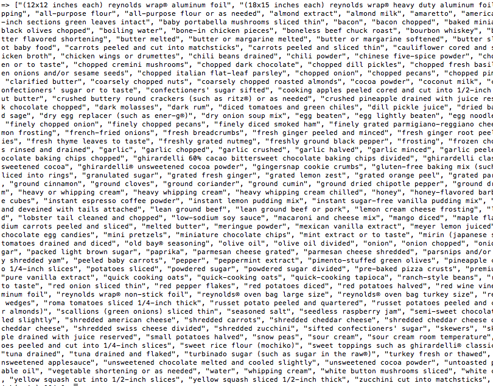
Fig2. Ingrediets processed from recipe data (fragment).
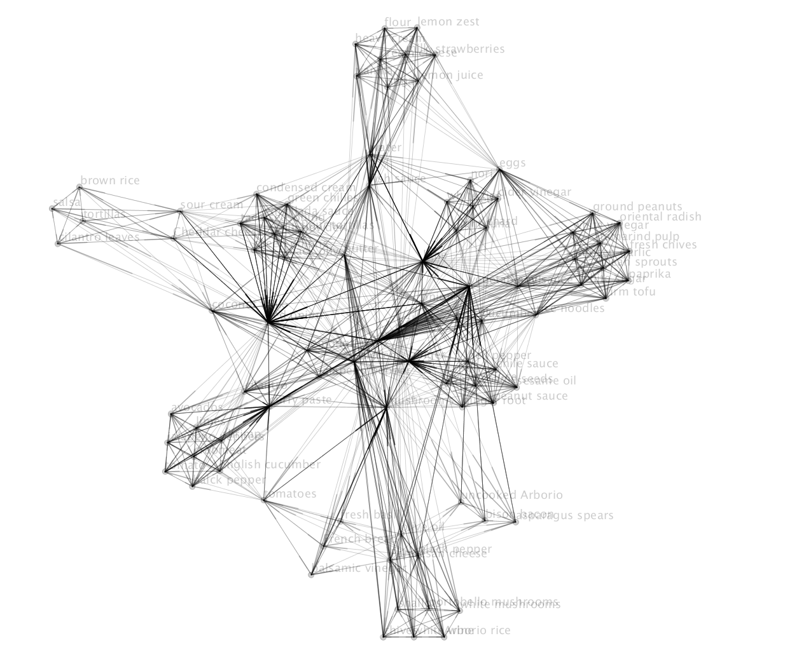
Fig3. Visualized ingredient network.
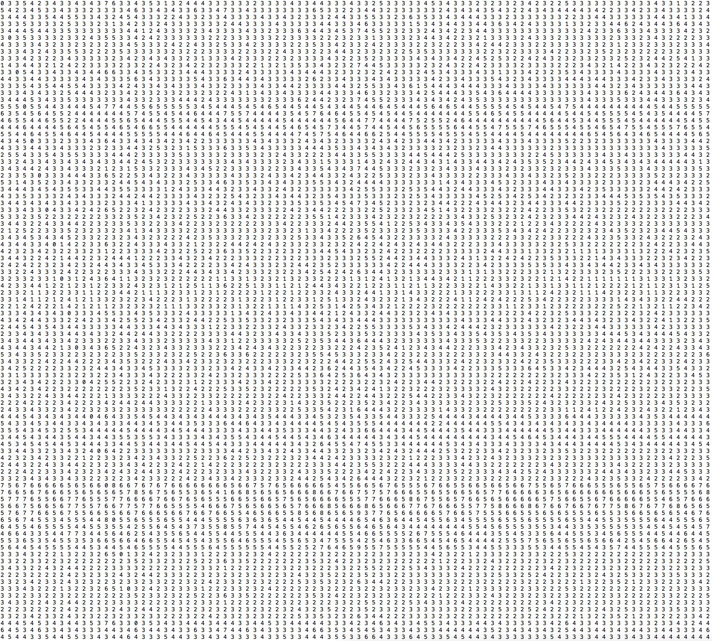
Fig4. Ingredient network in matrix (fragment).
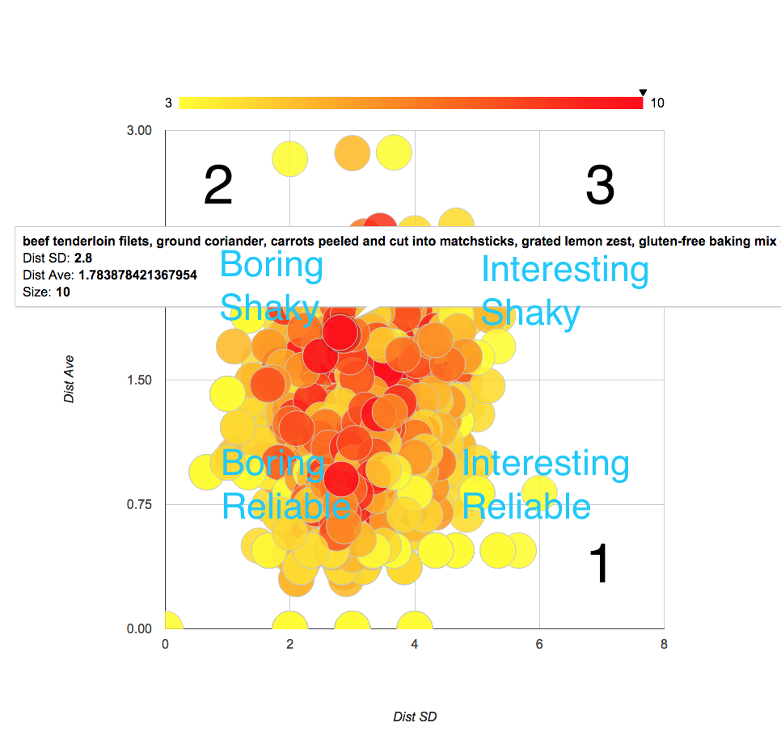
Fig5. Map of generated ingredient set according to average of ingredients' distances and standard deviation of ingredients' distances.

Fig6. Computationally Generated Recipe. (1)Parsely, Oats, Butter. (2)Pepper Jack Cheese, Salt, White Chocolate. (3)Rice, Potato, Sugar. Each number is mapped on Fig5.
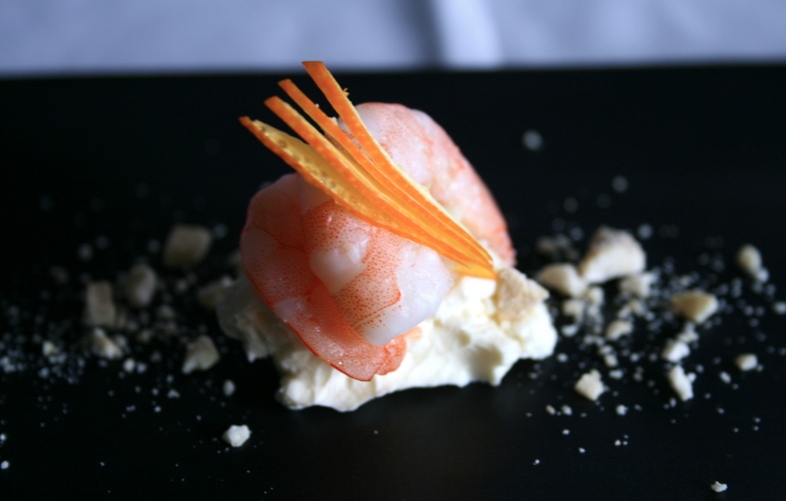
Fig7. Orange, Shrimp, Cream Cheese, Cashew.
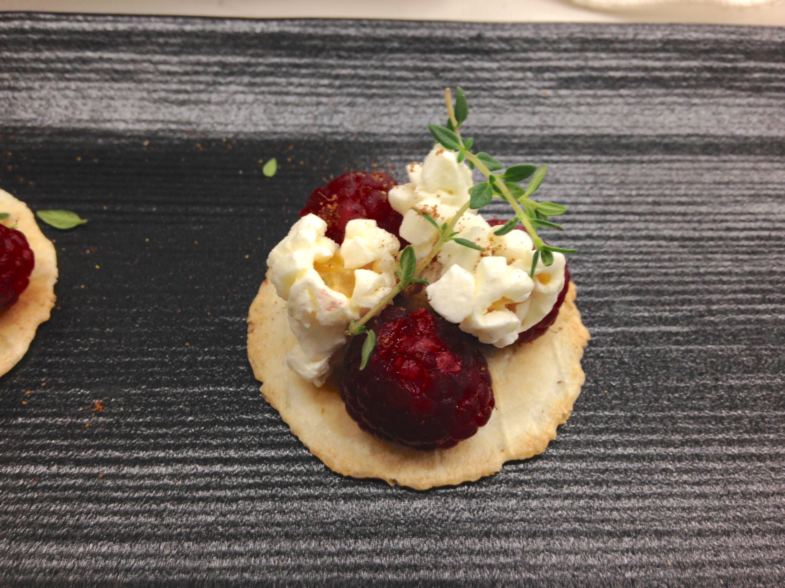
Fig8. Raspberry, Salted Popcorn, Bourbon Whisky, Chinese Five-spice powder, Thyme.
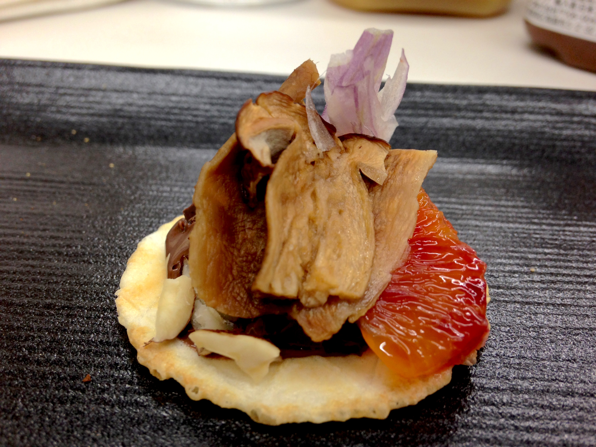
Fig9. Porcino, Dark Chocolate, Cashew, Blood Orange, Shallot.
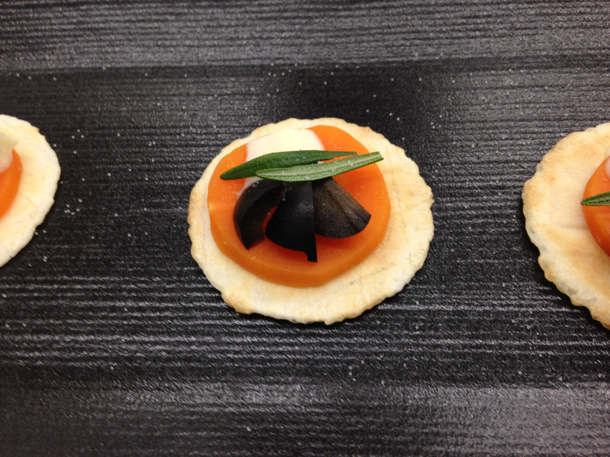
Fig10. White Chocolate, Rose Marry, Carrote.
Appendix
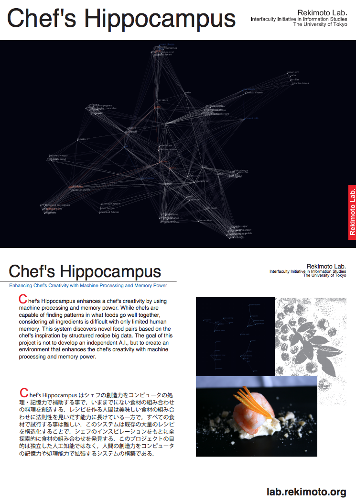Fig a-1. Poster for Rekimoto Lab 2015.
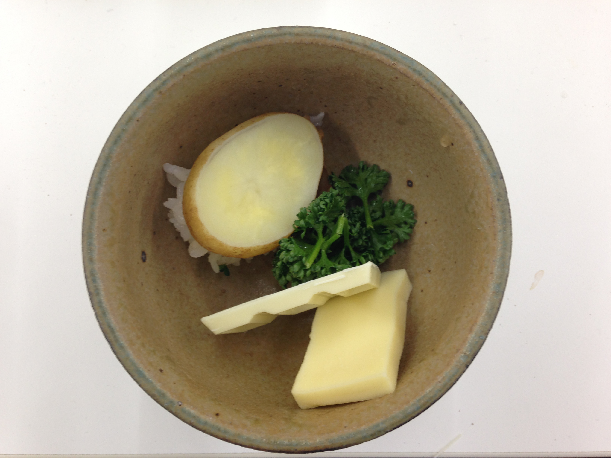
Fig a-2. Strangers in a bowl.
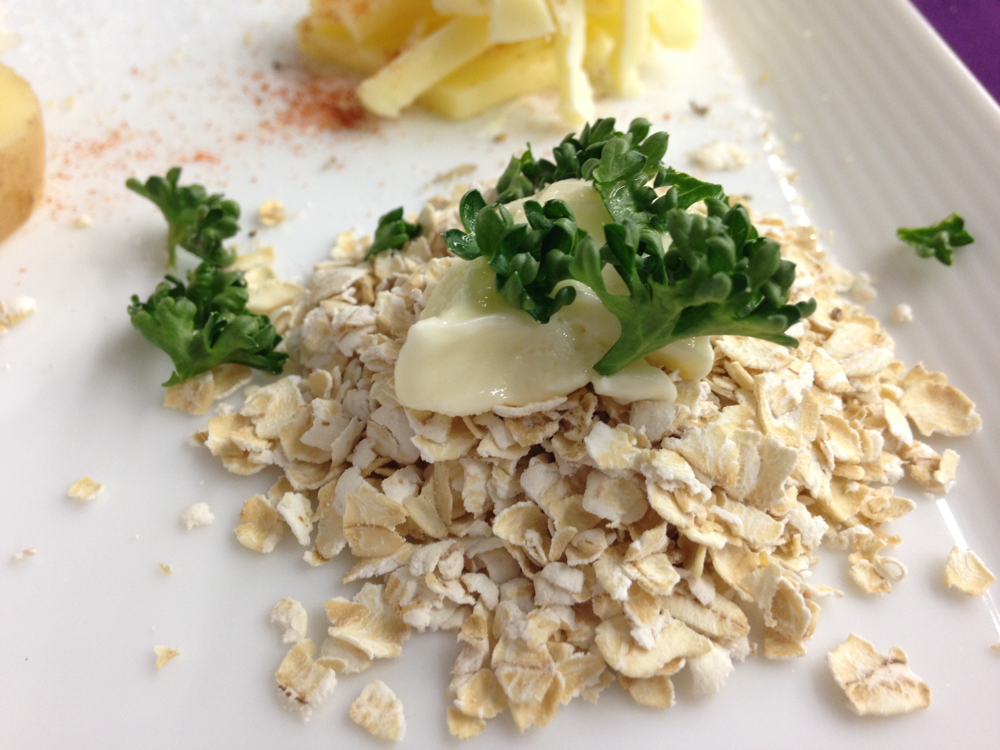
Fig a-3. Best recipe in 4 tested recipes. (1)Parsely, Oats, Butter.
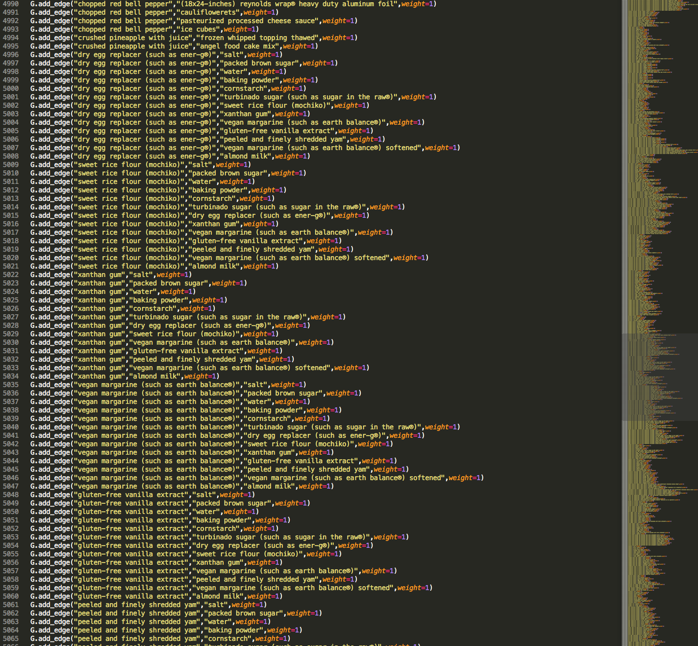
Fig a-4. Ingredient - ingredient weight, showing how relative they are (fragment).
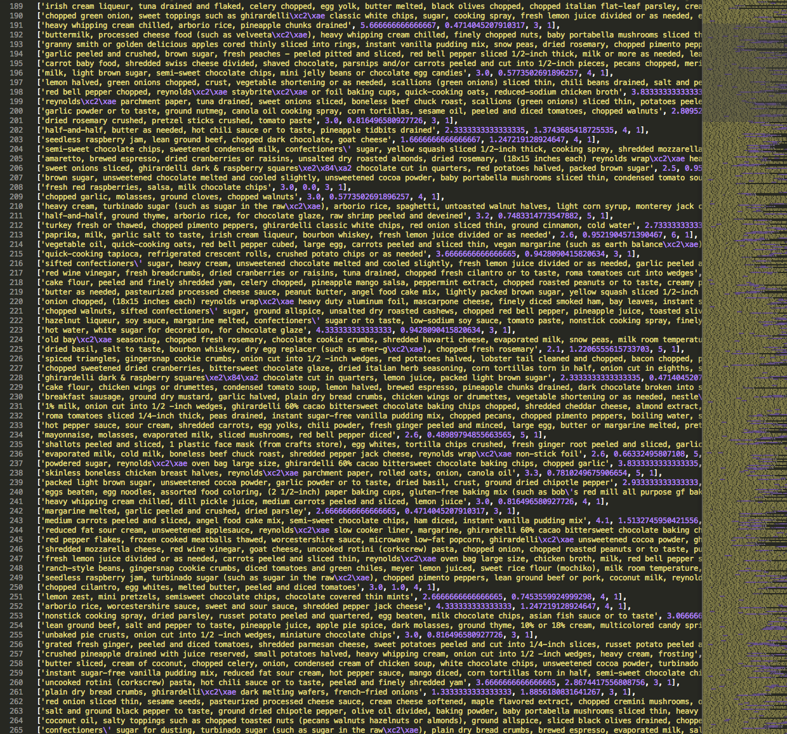
Fig a-5. 10000 recipes generated by computer in 2 sec (fragment)